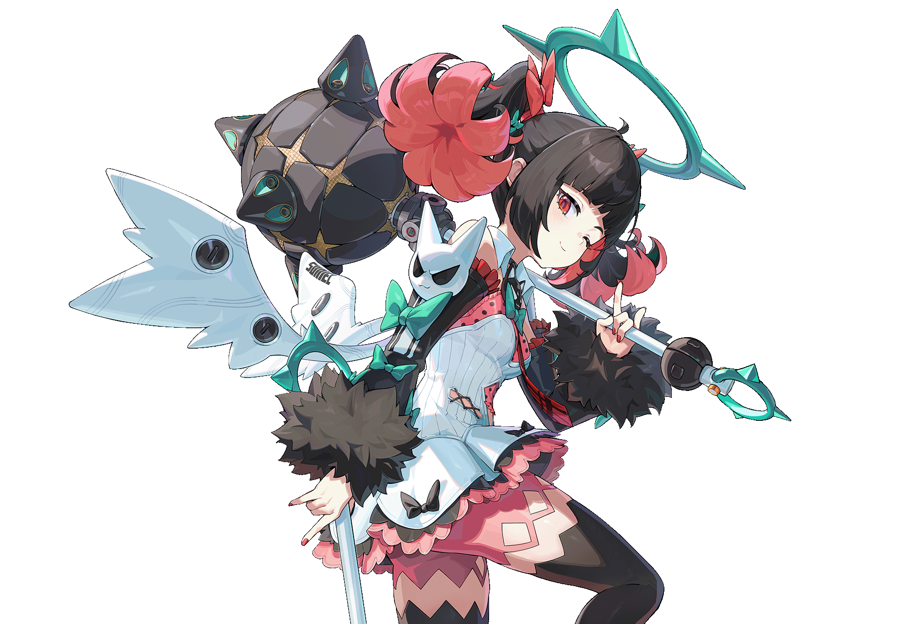
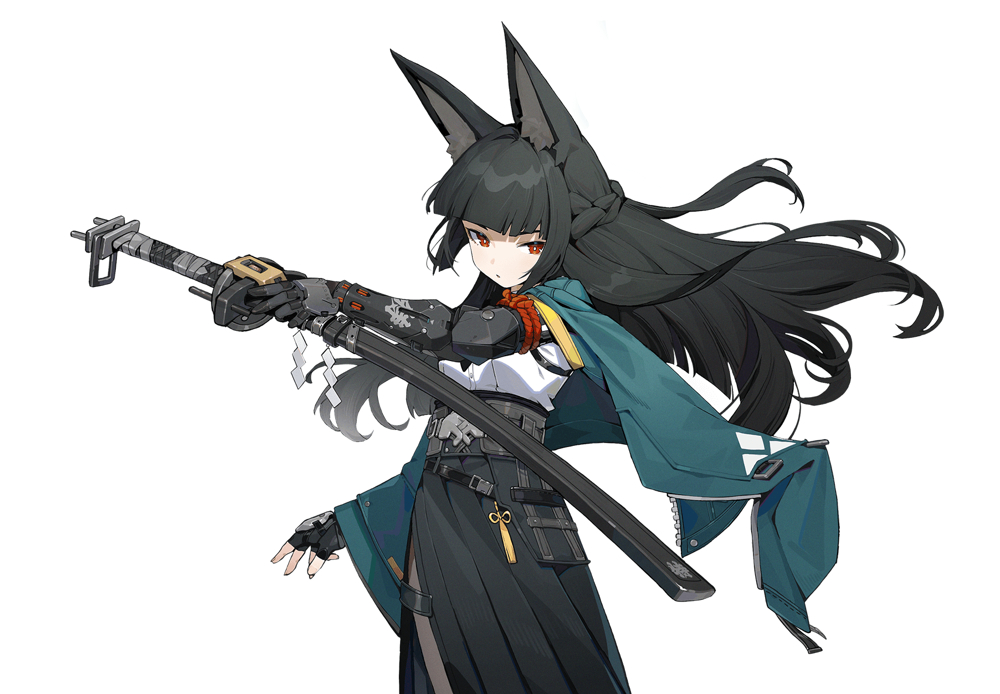
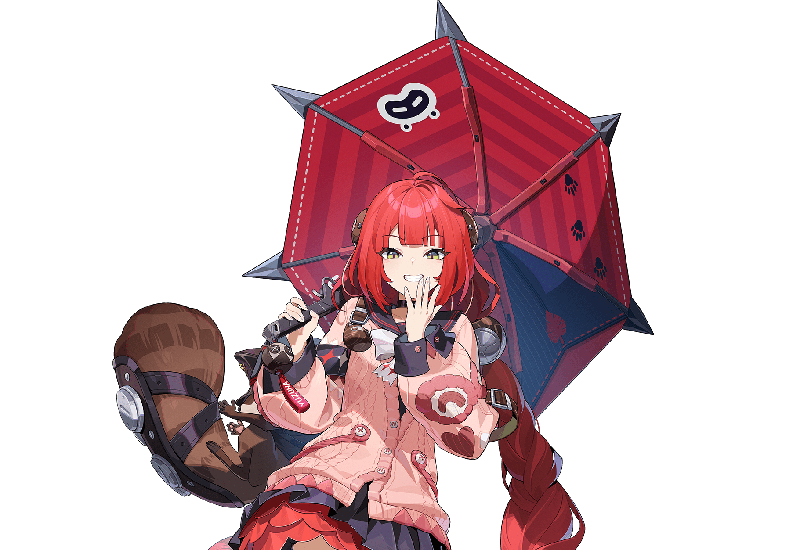

ACCOUNT A练度偏低 · 其他队不齐 · 环境要凹
LEFA / OPERATION FILE 01
先补体系，
再追命座
先把能运转的队伍拼完整，再把资源投向上限。
01克拉蕾 2+1当前第一优先级
02南宫羽 2+1第二层成长位
CORE / 01

南宫羽2+1
02 / ACCOUNT DIRECTORY
账号压力
ACCOUNT B练度偏低 · 抢队友 · 环境不利要凹
03 / ABYSS STRUCTURE
深渊不是三队平均养
虚狩 A一C · 一拐 · 一击破带走第一队
虚狩 B一C · 一拐 · 一击破带走第二队
第三队看环境补位练度低就要凹
主C→拐→击破
例外：雅 / 柚叶 / 薇薇安可组成一C两拐的异常体系。

+
+EXCEPTION / 一C两拐04 / DECISION LADDER
抽卡决策
01克拉蕾 2+1先补核心体系
当前最高优先级：先补主轴与队友，再考虑命座上限。
02南宫羽 2+1等待环境窗口
第二优先级：作为第二队成长位，观察轮换与资源压力。
击破 / 辅助 1+1主C 2+1XP优先 先喜欢
05 / VERSION WATCH
版本观察
版本开头火击破
虚狩拐
同期角色性价比通常较低
虚狩前男角色
虚狩后拉拉组
1.0–3.0观察，不是官方承诺。
FINAL CALL
先把能打的队伍
拼完整。
确定目标 → 补齐队伍 → 回头提升练度。